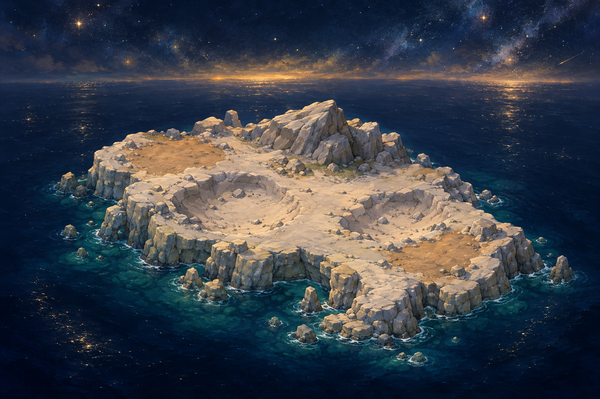
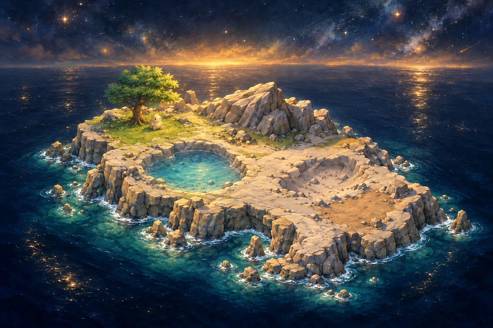

ISOLARIOMerge Discovery · Atlante Vivente
4 essenze24 essenzeUn mondo da immaginareIl primo habitat
Ogni scoperta può lasciare un segno.Acqua, terra e vita. Una riva ha trovato il suo equilibrio.
◌Vuoto
✧Energia
◆Materia
◷Tempo
TaccuinoAtlanteCAMPIONE DI COMPOSIZIONE · REVISIONE VISIVA PENDENTE